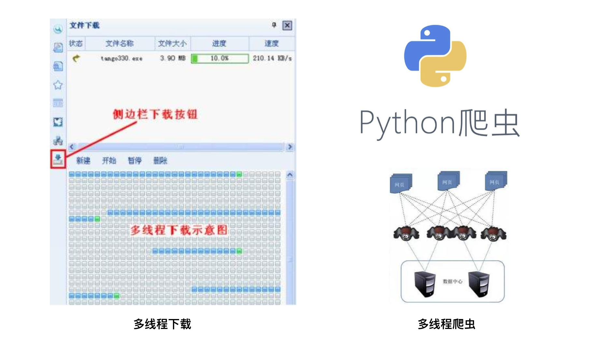
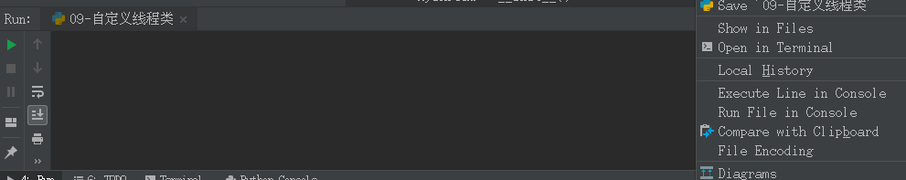
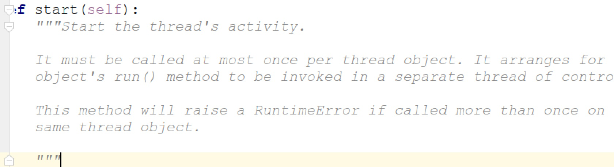
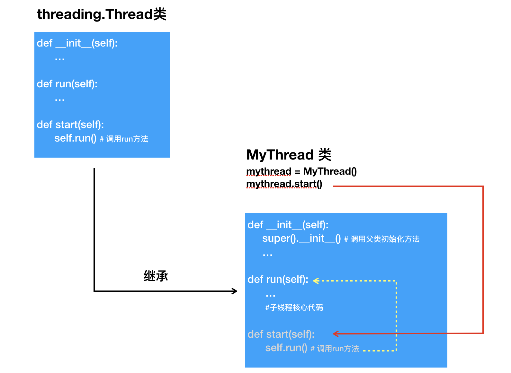
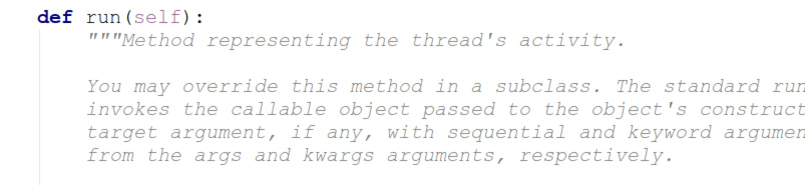

07-自定义线程类
目标¶
- 知道通过继承 threading.Thread 可以实现自定义线程
1. 自定义线程类¶

通过上一小节，能够看出，通过使用threading模块能完成多任务的程序开发，为了让每个线程的封装性更完美，所以使用threading模块时，往往会定义一个新的子类class，只要
- 让自定义类 继承
threading.Thread- 让自定义类 重写
run方法- 通过实例化自定义类对象.start() 方法启动自定义线程
示例如下：
import threading
import time
# 自定义线程类：
# 1、让自定义的类继承threading.Tread类
# class Thread():
# .....
# def start():
# self.run()
# def run():
# pass
# ......
# 2、重写父类的 run 方法
class MyThread(threading.Thread):
# 定义构造方法
def __init__(self,num):
# 调用父类的init方法
super(MyThread, self).__init__()
# 定义属性保存 num 值
self.num = num
# 重写父类的run方法
def run(self):
for i in range(5):
# self.name 是继承自父类Thread 的，用于保存线程的名称
print("正在执行run方法...", self.name)
time.sleep(0.5)
def test(self):
pass
if __name__ == '__main__':
# mythread 对象是 MyThread 类的实例对象
# MyThread 是一个线程类，mythread 是线程对象（t1.start()）
mythread = MyThread(10)
# 启动线程
mythread.start()

说明：
- python的threading.Thread类有一个run方法，用于定义线程的功能函数，可以在自己的线程类中覆盖该方法。而创建自己的线程实例后，通过Thread类的start方法，可以启动该线程，交给python虚拟机进行调度，当该线程获得执行的机会时，就会调用run方法执行线程。
在threading.Thread的底层类中描述：
Start the thread's activity. 启动线程的活动。 It must be called at most once per thread object. It arranges for the object's run() method to be invoked in a separate thread of control. 每个线程对象最多只能调用一次。它安排了 对象的运行（）方法在单独的控制线程中调用。 This method will raise a RuntimeError if called more than once on the same thread object. 如果调用不止一次，则此方法将引发运行时错误。同一线程对象。threading.Thread类中 start() 方法描述

-
在run方法中 使用
self.name可以获取当前正在运行的线程的名称 -
自定义线程执行原理：
1、 start() 是子类继承父类得到的 2、调用start() 方法，但是对象的run方法被执行了，说明 start方法中调用了 run方法
3、子类继承父类的 name 属性（保存的是线程的名称）

threading.Thread类中run() 方法：

-
如果自定义类重写了
__init__() 方法，注意要在初始化方法中先调用父类的__init()__方法,完成父类Thread 的必要的初始化 -
``` super(MyThread, self).init() 调用父类的构造方法
* super用法 * super(type【类】,object-or-type 【类，一般是 self】) ```
2. 自定义线程类应用场景¶
2.1 多线程实现文件下载【了解】¶
文本网址：https://www.cnblogs.com/owasp/p/6413480.html
#! -coding:utf8 -*-
import threading,sys
import requests
import time
import os
class MulThreadDownload(threading.Thread):
def __init__(self,url,startpos,endpos,f):
super(MulThreadDownload,self).__init__()
self.url = url
self.startpos = startpos
self.endpos = endpos
self.fd = f
def download(self):
print("start thread:%s at %s" % (self.getName(), time.time()))
headers = {"Range":"bytes=%s-%s"%(self.startpos,self.endpos)}
res = requests.get(self.url,headers=headers)
# res.text 是将get获取的byte类型数据自动编码，是str类型， res.content是原始的byte类型数据
# 所以下面是直接write(res.content)
self.fd.seek(self.startpos)
self.fd.write(res.content)
print("stop thread:%s at %s" % (self.getName(), time.time()))
# f.close()
def run(self):
self.download()
if __name__ == "__main__":
url = sys.argv[1]
#获取文件的大小和文件名
filename = url.split('/')[-1]
filesize = int(requests.head(url).headers['Content-Length'])
print("%s filesize:%s"%(filename,filesize))
#线程数
threadnum = 3
#信号量，同时只允许3个线程运行
threading.BoundedSemaphore(threadnum)
# 默认3线程现在，也可以通过传参的方式设置线程数
step = filesize // threadnum
mtd_list = []
start = 0
end = -1
# 请空并生成文件
tempf = open(filename,'w')
tempf.close()
# rb+ ，二进制打开，可任意位置读写
with open(filename,'rb+') as f:
fileno = f.fileno()
# 如果文件大小为11字节，那就是获取文件0-10的位置的数据。如果end = 10，说明数据已经获取完了。
while end < filesize -1:
start = end +1
end = start + step -1
if end > filesize:
end = filesize
# print("start:%s, end:%s"%(start,end))
# 复制文件句柄
dup = os.dup(fileno)
# print(dup)
# 打开文件
fd = os.fdopen(dup,'rb+',-1)
# print(fd)
t = MulThreadDownload(url,start,end,fd)
t.start()
mtd_list.append(t)
for i in mtd_list:
i.join()
2.2 多线程实现爬虫【了解】¶
本文网址：https://www.cnblogs.com/mr-zys/p/5059451.html
# coding: utf-8
from Queue import Queue
import threading
import urllib2
import time
import json
import codecs
from bs4 import BeautifulSoup
urls_queue = Queue()
data_queue = Queue()
lock = threading.Lock()
f = codecs.open('out.txt', 'w', 'utf8')
class ThreadUrl(threading.Thread):
def __init__(self, queue):
threading.Thread.__init__(self)
self.queue = queue
def run(self):
pass
class ThreadCrawl(threading.Thread):
def __init__(self, url, queue, out_queue):
threading.Thread.__init__(self)
self.url = url
self.queue = queue
self.out_queue = out_queue
def run(self):
while True:
item = self.queue.get()
data = self._data_post(item)
try:
req = urllib2.Request(url=self.url, data=data)
res = urllib2.urlopen(req)
except urllib2.HTTPError, e:
raise e.reason
py_data = json.loads(res.read())
res.close()
item['first'] = 'false'
item['pn'] = item['pn'] + 1
success = py_data['success']
if success:
print 'Get success...'
else:
print 'Get fail....'
print 'pn is : %s' % item['pn']
result = py_data['content']['result']
if len(result) != 0:
self.queue.put(item)
print 'now queue size is: %d' % self.queue.qsize()
self.out_queue.put(py_data['content']['result'])
self.queue.task_done()
def _data_post(self, item):
pn = item['pn']
first = 'false'
if pn == 1:
first = 'true'
return 'first=' + first + '&pn=' + str(pn) + '&kd=' + item['kd']
def _item_queue(self):
pass
class ThreadWrite(threading.Thread):
def __init__(self, queue, lock, f):
threading.Thread.__init__(self)
self.queue = queue
self.lock = lock
self.f = f
def run(self):
while True:
item = self.queue.get()
self._parse_data(item)
self.queue.task_done()
def _parse_data(self, item):
for i in item:
l = self._item_to_str(i)
with self.lock:
print 'write %s' % l
self.f.write(l)
def _item_to_str(self, item):
positionName = item['positionName']
positionType = item['positionType']
workYear = item['workYear']
education = item['education']
jobNature = item['jobNature']
companyName = item['companyName']
companyLogo = item['companyLogo']
industryField = item['industryField']
financeStage = item['financeStage']
companyShortName = item['companyShortName']
city = item['city']
salary = item['salary']
positionFirstType = item['positionFirstType']
createTime = item['createTime']
positionId = item['positionId']
return positionName + ' ' + positionType + ' ' + workYear + ' ' + education + ' ' + \
jobNature + ' ' + companyLogo + ' ' + industryField + ' ' + financeStage + ' ' + \
companyShortName + ' ' + city + ' ' + salary + ' ' + positionFirstType + ' ' + \
createTime + ' ' + str(positionId) + '\n'
def main():
for i in range(4):
t = ThreadCrawl(
'http://www.lagou.com/jobs/positionAjax.json', urls_queue, data_queue)
t.setDaemon(True)
t.start()
datas = [
{'first': 'true', 'pn': 1, 'kd': 'Java'}
#{'first': 'true', 'pn': 1, 'kd': 'Python'}
]
for d in datas:
urls_queue.put(d)
for i in range(4):
t = ThreadWrite(data_queue, lock, f)
t.setDaemon(True)
t.start()
urls_queue.join()
data_queue.join()
with lock:
f.close()
print 'data_queue siez: %d' % data_queue.qsize()
main()